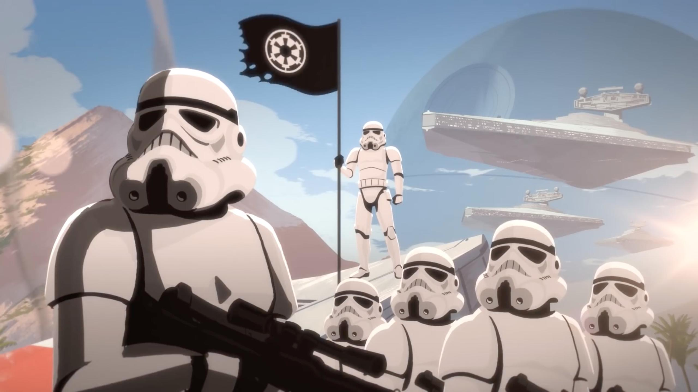
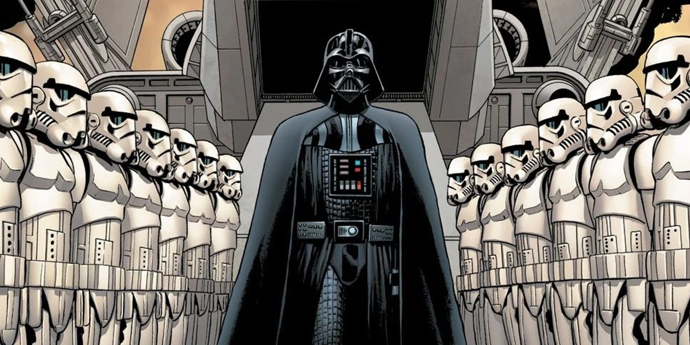
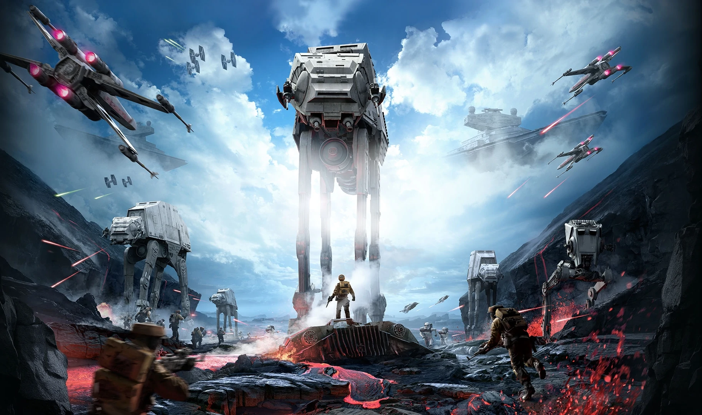
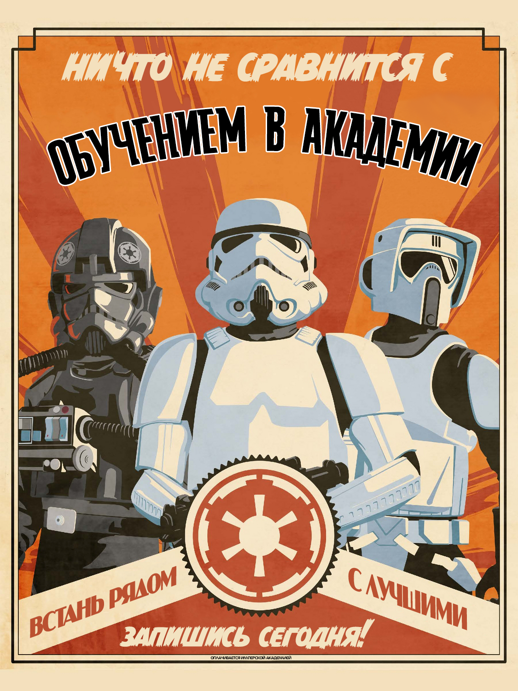
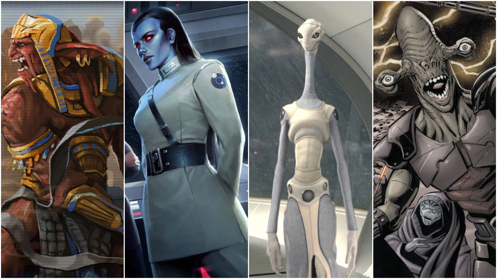

Галактическая Империя
«Она [Империя] как космический слизень: существует лишь для того, чтобы существовать. Она будет пожирать и пожирать всё вокруг.»
Галактическая Империя, также известная как Первая Галактическая Империя и Новый порядок, обычно называемая Империей, Порядком, а после уничтожения — Старой Империей — фашистская галактическая диктатура, образованная из Галактической Республики после завершения Войн клонов. Наращивавший силы последние годы существования Республики лорд ситхов Дарт Сидиус окончательно утвердил правительство под своим контролем, провозгласив себя первым Галактическим Императором Шивом Палпатином. Через махинации своих обеих ипостасей — Верховного канцлера и лорда ситхов, — он смог уничтожить Орден джедаев и депопуляризировать Галактический Сенат, положив конец тысячелетию демократии.

Почти два десятилетия имперской машине Палпатина не существовало преград: любые попытки сопротивления сметались разросшимися вооружёнными силами. Большую часть существования Империи, единственным напоминанием о демократии и Республике оставался Имперский Сенат, который был распущен после получения Империей мощи «Звезды Смерти». Тем не менее, Имперское владычество, тяжело отразившееся на отдалённых мирах, привело к возникновению сопротивляющихся режиму сил, в конечном итоге сформировавших Альянс за восстановление Республики. Объединённый общей целью, Альянс добился первых успехов, завладев чертежами «Звезды Смерти» и уничтожив её в битве при Явине.
После этого, пять лет Империя и Альянс боролись за контроль над Галактикой, что вылилось в гибель Императора Палпатина и его ученика Дарта Вейдера вместе со второй Звездой Смерти на орбите Эндора. С исчезновением ситхов, чья власть держалась, в том числе, и на страхе, обезглавленной Империи труднее стало сдерживать Новую Республику. Разобщённые осколки Империи были повержены в битве при Джакку, которая завершилась вскоре после подписания Галактического соглашения, мирного договора между Империей и Новой Республикой. Тем не менее, идеи Империи продолжали существовать: в Неизведанных Регионах наращивала силы организация Первый Орден, в основе которой стояли бежавшие туда после поражения Имперские военные.

История
На протяжении, по крайней мере, тысячи лет основным государственным образованием в галактике была Галактическая Республика, во главе которой стоял однопалатный Галактический Сенат, возглавляемый Верховным канцлером. В последние десятилетия своего существования, Республика погрязла в бюрократии, что сделало её неэффективной. Дарт Сидиус, тёмный лорд ситхов, известный в миру как сенатор от Набу Шив Палпатин, посетовал на состояние республики в частном разговоре, отмечая, что Республика уже не та, что была раньше. За тринадцать лет до краха Республики, Сидиус спланировал и организовал вторжение Торговой Федерации на Набу, свою родную планету, желая манипулировать королевой. Прибыв с помощью джедаев в Сенат, королева Амидала инициировала вотум недоверия текущему канцлеру, Валоруму, и избрание Палпатина как нового канцлера. За последующие десять лет интриги Сидиуса сделали войну неизбежной. Множество систем отвергло Республику, присоединившись к Конфедерации независимых систем, возглавляемой графом Дуку, бывшим джедаем и тайным учеником Сидиуса. В 22 ДБЯ началась Войны клонов, в которой схлестнулись войска Великой армии Республики, возглавляемой джедаями и полчища боевых дроидов Конфедерации, а канцлер Палпатин получил дополнительные чрезвычайные полномочия
1.1. Рождение Нового Порядка
«В целях обеспечения безопасности и большей стабильности, Республика будет реорганизована нами в первую Галактическую Империю, во имя сохранности и во имя блага общества!»
В ходе войны канцлер Палпатин стал популярным политическим лидером, что позволило ему оставаться в должности дольше установленного срока. В этот период Палпатин наращивал силы и влияние для дальнейшего провозглашения Империи. Когда война стала приближаться к концу, в 19 ДБЯ, Орден джедаев раскрыл истинную сущность Палпатина, Дарта Сидиуса. Попытавшись арестовать его, Орден стал жертвой интриги Палпатина: во время дуэли в его офисе, джедай Энакин Скайуокер переходит на Тёмную сторону Силы, убивая магистра Винду, и становится учеником Сидиуса, который, в свою очередь объявляет клонам приказ 66 с целью уничтожить джедаев, возглавляющих войска Республики на полях сражений. Спустя некоторое время Дарт Вейдер атаковал Храм джедаев на Корусанте и уничтожил всех находившихся там джедаев. Таким образом, большинство членов Ордена было уничтожено, однако некоторым, как Калебу Дьюму и Луминаре Ундули, удалось уйти живыми. Более того, мастер-джедай Авелл смог передать множество реликвий джедаев коллекционеру антиквариата Энтрону Баху, дабы тот спрятал их на заброшенной джеонозианской колонии. Вскоре после, Палпатин направил Вейдера на Мустафар для уничтожения собравшихся там лидеров Сепаратистов, после чего Арсин Крассус перевёл все средства со счетов Торговой Федерации на нужды Имперского правительства.

1.2. Эпоха Империи
«Граф Видиан со всей звёздной мощью отправляется в инспекционную поездку по объектам индустрии»
После завершения Войн клонов со смертью Вице-короля Нута Ганрея и других лидеров Конфедерации на планете Мустафар, Конфедерация независимых систем перестала существовать: армия дроидов отключилась, а флот был разобран в отдалённых доках, как верфи Билбринджи. Тем не менее, многие технологии и продукты корпораций, входивших в состав Конфедерации, избежали приватизации Империей и продолжили своё существование на чёрных рынках, в том числе обломки «Непобедимого», флагмана адмирала Тренча. Технологии Сепаратистов продолжали использоваться в таких местах, как Корпоративный сектор, а Империя продолжала бороться с остатками Сепаратистов даже через четыре года после завершения Войн клонов, в то время как криминальные группировки использовали боевых дроидов даже на Корусанте в качестве оружия. В 18 ДБЯ, в назидание мирам, всё ещё поддерживающим Сепаратистские идеи, мофф Уилхафф Таркин был назначен для наведения порядка на Антаре-4, спутника готалов, входившего в Конфедерацию и участвовавшей в операции Республиканской разведки по созданию групп вооружённого сопротивления. Несмотря на то, что Комиссия по охране Нового порядка засекретила сведения о массовых убийствах, сведения об этом просочились через журналистов, как Анора Фэир и Хаск Тафф, благодаря которым инцидент получил название Антарских зверств. После того, как большинство пиратов и бывших сепаратистов было повержено, а контрабанда значительно ограничена, Империя не встречала значительных препятствий правлению. Значительное сопротивление оказывали лишь некоторые планеты, в том числе — Рилот, родной мир тва’леков. Мофф Делиан Морс и полковник Белкор Дрей неудачно подавляли движение «Свободный Рилот» во главе с Чамом Синдуллой, отцом будущего генерала Геры Синдуллы и героем Войн клонов, чья поддержка помогла освободить планету от сил сепаратистов во главе с эмиром Уотом Тамбором. Тви’леки во главе с Синдуллой организовали сеть укрытий по всей планете, из которых велись нападения на различные Имперские отряды и конвои. Рилот оставался горячей точкой весь период существования Империи.

1.3. Гражданская Война
«Я всего несколько недель на активной службе, но мне уже ясно, что Повстанческий Альянс намного больше и опаснее, чем когда-либо признавали официальные источники. Мы действуем не как миротворческие силы. Наши приготовления больше соответствуют военному положению».
Альянс за восстановление Республики был образован за несколько месяцев до уничтожения Звезды Смерти. К тому моменту некоторые отряды Альянса, как 61-я мобильная пехотная рота, уже активно действовали в мирах, подчинённых Империи, как Майгито, Вир-Афшир и Крусиваль.

1.4. Роспуск Империи
«В течение месяца после битвы за Джакку Империя не предприняла никаких крупномасштабных наступлений. Источники сообщают, что все имперские суда в Центре и на Внутреннем Кольце остаются в границах, определённых договором. Несколько видных членов Временного Сената полагают, что война Новой Республики с остатками Империи наконец подходит к концу и окончательная победа неизбежна. Однако сегодня канцлер предупредила, что все планеты должны оставаться в состоянии повышенной готовности и Звёздный флот Новой Республики должен сохранять военное положение в обозримом будущем».
После завершения Галактической гражданской войны в 5 ПБЯ, Галактическая Империя продолжила существовать в том же виде, что и до войны, лишь ограниченная в территориях. Из-за отсутствия жёсткой центральной власти, в территориях начался сепаратизм. Многие Имперские концерны стали, фактически, отдельными государствами, занимающими целые системы и сектора. Расколовшись, в итоге, во множество самостоятельных народов и фракций, остатки Империи теперь боролись за независимость от вновь доминирующей Республики.
1.5. Наследие
«Один завоеватель сменяется другим…»
После распада центрального имперского правительства и побега множества военных и научных деятелей Империи в Неизведанные Регионы после подписания Галактического соглашения, то, что оставалось от Империи продолжало дробиться и разрушаться. Новая Республика обязалась проводить уравнительную политику и поддерживать мирное сосуществование со многими из правительств, оставшихся под контролем бывших имперских губернаторов, некоторые из которых стремились присоединиться к Республике. Многие орбитальные верфи Империи были уничтожены, а Республика приняла закон о военном разоружении, и, пытаясь избежать ошибок Старой Республики, приняла решение перемещать столицу по планетам-членам, нежели делать таковой бывший Имперский центр.
Коллекционеры Имперских артефактов часто брали «титулы», являющиеся квази-отсылками к поздней Империи. Так, существовали Мститель за Джакку, Гнев Императора и Огонь Перехватчика. Многие с положительными эмоциями вспоминали эффективность Империи, её грозность и большой военный аппарат.
В течение многих лет осколки Империи, возглавляемые сбежавшими в Неизведанные Регионы деятелями формировались в новое государство, таинственный Первый Орден. Используя унесённые с собой тайны Империи, Первый Орден быстро расширялся во вновь открытых системах. Там строились заводы и фабрики, производящие новое вооружение для будущего захвата Галактики. Тем не менее, Первому Ордену противостояло Сопротивление, возглавляемое генералом Леей Органой, финансируемое некоторыми сенаторами Новой Республики, видевшими в Первом Ордене большую, чем прочие, угрозу.

Общество и Культура
2.1. Эстетика
С преобразованием Республики в Империю изменения произошли и в эстетике. В то время как при демократическом режиме основным элементов а архитектуре были широкие и плавные линии и переходы, авторитарный режим Палпатина охарактеризовался жёсткими и угловатыми элементами. Новый стиль появился ещё в завершении эпохи Республики; ярчайшим его примером является Республиканский центр военных операций на Корусанте.
2.2. Пропаганда
Галактическая Империя обалдала множеством пропагандистских инструментов, составляющих эффективную пропагандистскую машину, манипулирующую мнениями и культурой множества миров по всей галактике. Так, в честь окончания Войн клонов и провозглашения Нового порядка Император Палпатин учредил День Империи, ставший национальным праздником для всего государства. Песнь «Слава Империи» стала национальным гимном[10]. С помощью широко применявшейся пропаганды Империя продвигала идеи Нового порядка через множество пропагандистских плакатов и про-Имперских новостных сводок через Новости Голонета, ведущие которых, как Олтон Кастл, находились под надзором Министерства информации, следившего, чтобы сводки лишь превозносили Империю и её силы и не рассказывали о ошибках, провалах и неудачах[50]. однако также существовали местные новостные агенства, также поддерживаемые Империей, как «Лотальский бюллетень»[51]. Имперский корпус прессы, работающий в сотрудничестве с Новостями Голонета, также обеспечивал согласование выходящих статей с общей линией поведения в Империи, проводя, таким образом, цензуру[52]. Благодаря множеству двойников[8] и технических средств, делающих облик Палпатина моложе, которые использовались в трансляциях, многие жители не подозревали о изувеченном облике Императора[10] и о том, что галактикой руководит ситх[53]. Для увеличения своей легитимности в глазах народа Империя использовала факт дуэли в офисе Палпатина как основной довод в утверждении о произошедшем «мятеже джедаев», произошедшем из-за желания Ордена джедаев захватить власть в галактике, и из-за которого Палпатину «пришлось» отдать приказ 66. В годы правления Палпатина большинство фактов, выставлявших джедаев в лучшем свете было забыто или искажено — так, Мейс Винду был назван лидером преступной группировки, напавшей на Джеонозис по собственной прихоти, из-за чего начались Войны клонов[31]. Тем не менее, не все принимали эту позицию — например, Залюна Майдер и Люк Скайуокер задавались вопросом о роли Империи в событиях, приведших к её образованию, поскольку те, кто был лично знаком с джедаями, не мог представить участие кого-либо из них в заговоре[25][54]. Те, кто пытался распространять независимые публикации, оказывались наказаны на второй случай нарушения запрета на это пожизненными каторжными работами невзирая на пол и возраст. Соревновательный суд был разрешён только в гражданских разбирательствах, но не при обвинениях против Империи[31]. Империя также объявила вне закона все культы, последователи которых поклонялись сверхъестественному[9], хотя такие культы как стражи Уиллов[37] и Церковь Силы продолжали существовать в эпоху Империи[9]. Тем не менее, окончание Войн клонов и отключение армии дроидов Сепаратистов действительно принесло мир и спокойствие в Центральные Миры[5]. Мир был поддерживаем действиями Коалиции прогресса, подразделения КОМПОНП, следившего за недопущением осквернения светлого образа Империи в произведениях искусства. Так, Коалиция прогресса использовала свою власть для того, чтобы заставить снести статую архитектора Дженьёра, бита, в мире Внешнего Кольца, Гареле[55],, для запрета на прослушивание и постановку отдельных опер, как песнь Лоджун[32] и для отправки членов группы «Хакко Дразлип и флейтисты» на рудники Кесселя за упоминание в своих текстах лорда Вейдера, после чего у них нашли контрабанду[54]. Безработица в системах со стратегически важных системах была признана незаконной и подвергалась наказанию[25] Будучи популярным спортом в Галактической Империи гравбол привлекал интерес к проводящимся соревнованиям команд с разных миров. Юношеская академия прикладных наук на Лотале обладала собственной командой, известной как ПриНаучные Меч-Коты, состоявшей из десяти человек. Правила игры предполагали наличие 64-метрового поля, на котором можно было играть в разновидности гравбола, в том числе и по кореллианским правилам[56]. Помимо легальных спортивных соревнований существовали также подпольные заведения на территории Империи, как Делёж Внешнего Кольца и Штормблэйд Бладфест, которые были основными конкурентами в этой сфере спорта[57].

2.3. Демография
«У меня нет проблем с инопланетянами — некоторые из моих друзей не-люди — но некоторые фанаты гравибола возражают против инопланетных физиономий, поскольку их вид даёт им преимущество перед людьми».
Основу населения Империи составляли люди, изначальным родным миром которых был Корусант, столица Империи[34]. Люди были абсолютным большинством как в Вооружённых силах Империи, так и среди управляющей верхушки[58]. Это доминирование одного вида не было случайным: имперская пропаганда, активно поддерживаемая государством, нагнетала ксенофобию и страх перед инопланетными по отношению к людям видами. К империи «инопланетяне» относились недружелюбно, и в ней к ним относились как к «другим» и «странным». Так, Империя использовала многие не-человеческие виды в качестве крепостных, рабов или препятствий, которые необходимо уничтожить. В Империи поддерживалось мнение, что «чужаки» не заслуживают доверия, в отличие от людей, и за их лицами прячутся кровожадные монстры. Имперская машина пропаганды оказалась настолько эффективна, что даже околочеловеческие виды разделили с людьми ненависть к другим разумным[7]. Из-за такого отношения, среди офицеров Империи крайне редко встречались представители не-человеческих рас[23]. Тем не менее, некоторые не-люди занимали важные посты в Империи: чагрианин Мас Амедда, занимающий должность Великого визиря, чисс гранд-адмирал Траун[59], Гранд-инквизитор из расы пау’анов, возглавлявший Инквизиторий[24]. Помимо прочего, Империя приняла унижающим человеческое достоинство изучать культуру и языки не-людей, например — иторианский, чтобы разрушить чужие культуры, пытаясь навязать высокие «Имперские стандарты» гражданам[8]. В стремлении увеличить популяцию людей и, следовательно, мобилизационный ресурс, Империя проводила несколько демографических программ, нацеленных на повышение рождаемости среди людей. В Империи поддерживались традиционные гетросексуальные связи, но наказаний за непубличное следование собственным сексуальным пристрастиям не было, если они не становились препятствиями для демографических программ[7].
